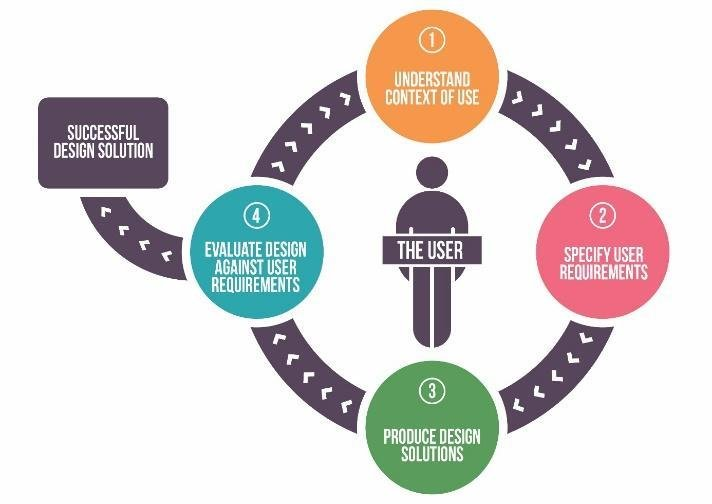
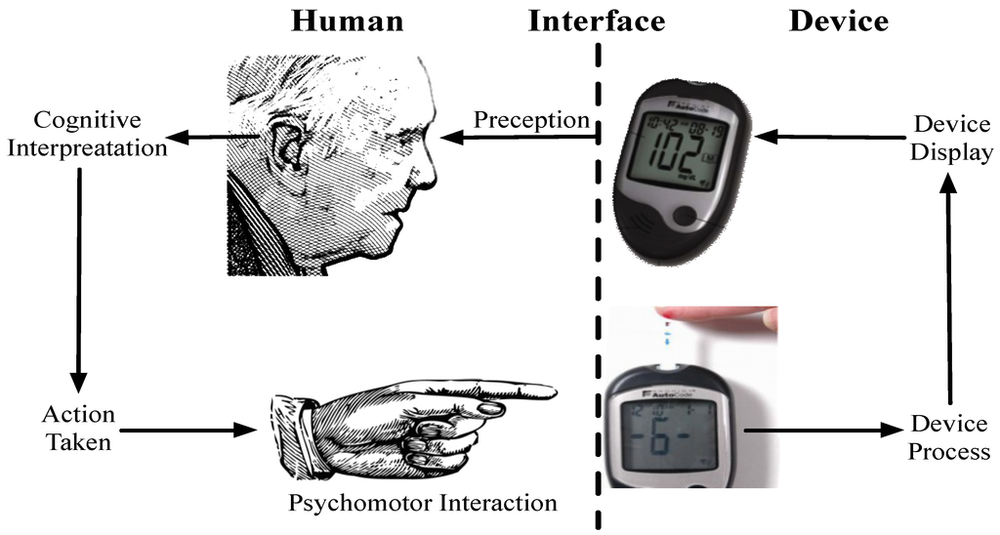

P2AC
-
Sciences du numériques et SHS
ajouter un déroulement presentation p2ac presentation numérique (environnement ambiant, RV, RA, autre plus classique) et SHS (methodologie et outils unity...) tp rv tp eyetracker
Que pourrait apporter le numérique dans votre futur métier ?
Valorisation (éco, pédagogique, recherche/savoir, récréatif...) d'un contenu (patrimoine, histoire)? Permettre des interactions réussies avec le contenu (environnement ambiant, logiciel, site internet, contenu virtuel, augmenté, etc.) Conception centrée utilisateur : méthodologie de conception d'une interface (IHM), d'un contenu, etc prennant en compte les besoins et retours des utilisateursLean Start-up

Innovation academy à Angers Technopole
Aspect définition des besoins (quel public, handicapte, accessibilité,...) Aspect conception (technologie numérique : connaitre les technos et ce quelles impliquent) Aspect évaluation (ergo physique, cognitive, utilisabilité, émotions, etc.)* Appréhender l'analyse de l'humain
- Comportementale : performance, eyetracker, EMG, expression faciale, capture du mouvement, etc.
- Physiologique : respiration, conductance cutanée, ECG, EEG, etc.
- Psychologique/cognitive (subjective) : personnalité, utilisabilité, émotions, charge de travail, etc. -

 . .
P2AC
Spécialisée en Sciences Humaines et Sociales (psychologie, marketing, économie, etc.)Compétences et outils (informatiques, électroniques et numériques) pour l'analyse des comportements humains
Conçoit des environnements (réels, virtuels et mixtes) contrôlés et des outils informatiques
Mesure la réaction des utilisateurs (comportementale, physiologique, cognitive, etc.)
Concevoir


Mesurer

Position du regard (barre)
Position du regard (VR)
"Inférées"
A vous de voir !
Quelques projets hébergés par la P2AC
La plateforme s'interesse aux comportements humain.
Mesurer pour concevoir (Numérique)
Utiliser la réponse d'un humain pour developper une technologie (produit, service, algo, etc.).
Concevoir pour mesurer (SHS)
Utiliser la technologie pour comprendre l'humain dans sa grande diversité et dans un contexte donné.
exemple de medium (afficheur numérique) Visite 3d https://petitegalerie.louvre.fr/visite-virtuelle/saison6/ https://www.youtube.com/watch?v=Au_UpzhzHwk&t=197s Pour la classification, l'archivage (data vizualisation) Les interactions pour ouvrir la culture à différent publique (personne agée, enfants, personne présentant des handicaps (moteur, sonore avec l'haptique, visuel, etc.) Exemple d'évaluation comportementale en vue d'améliorer l'expérience (de visite, de consommation, pédagogique, etc.) comment je peux savoir si un contenu n'ennuie pas ? et bien présenter attrakdif, données comportementale, eyetracking Est-ce que mes indications sont bonnes ? oui mais sont-elles lues ? eyetracking, questionnaire gamification Attention a ne pas avoir l'effet inverse (conception) : le numérique peut faire peur, ou ne pas être apprécié d'ou la mesure si possible couplée avec une analyse interindividuelle.
lors ça sert à quoi - exemple pour l'apprentissage ? - Créer des situations non réalisables en réel - Standardiser des environnements - Representer / conceptualiser des phénomènes / données, etc. - Augmenter le réalisme - Enregistrer des infos temps réels (physio, comportement, etc.) - Se placer à differents points de vue - Rejeu de données Comprendre : evenements physiques, des concepts scientifiques, prise de decision métadonnée, etc...